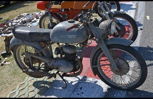
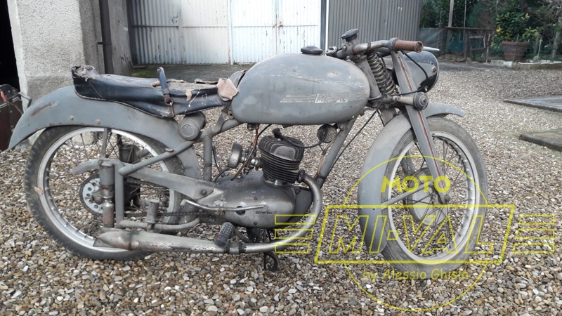
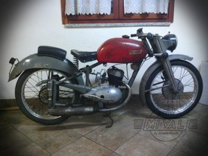
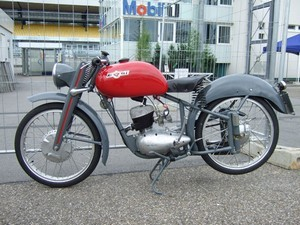
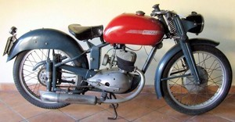
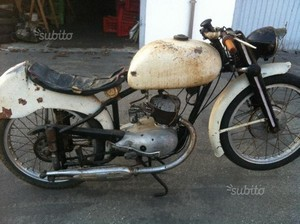
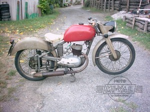
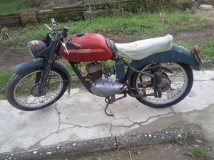
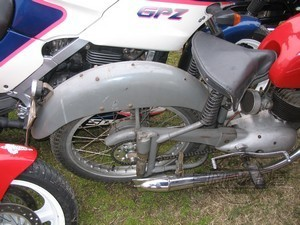

MODELLO 125 NS Prima serie (1952)
Modello di moto non documentato ma osservato in diversi esemplari.
Potrebbe essere l'antenato del modello "NS".
Per questo l'ho definito liberamente come "NS Prima serie"
Le forcelle sono in lamiera stampata e la moto è predisposta per la
sella singola.
Come per l' NS il motore è a 4 marce e il carburatore è il DellOrto UB
20 S.
Dallo studio dei numeri di telaio si può vedere come questi esemplari
appartengono ad un intervallo completamente diverso da quello degli NS
che ho catalogato.
In alcuni casi è utilizzato un mozzo anteriore ventilato e con
diametro maggiore del posteriore, mentre in altri casi i due mozzi
hanno lo stesso diametro.
Il bauletto porta attrezzi potrebbe essere stato quello cilindrico
nelle produzioni più vecchie, mentre in altre è uguale a quello dei
modelli N e NS del 1952-1953.
Nello stesso anno era proposto il modello 125 S, diverso nella
ciclistica e nel motore (cilindro in lega leggera e carburatore da
22/24).
Di seguito alcune foto di moto sia di amici che trovate in rete.
Alcune moto sono state chiaramente rimaneggiate.
Di alcune di queste moto conosco il numero di telaio. Se qualcuno
riconosce la propria moto, gli sarei grato se mi fornisse il numero di
telaio al fine di capire qualcosa di più della produzione di questo
modello.
Ogni contributo informativo è ben accetto:
alexghisla@inwind.it
|  |
 |
 |
|  |
 |
 |
|  |
 |
 |